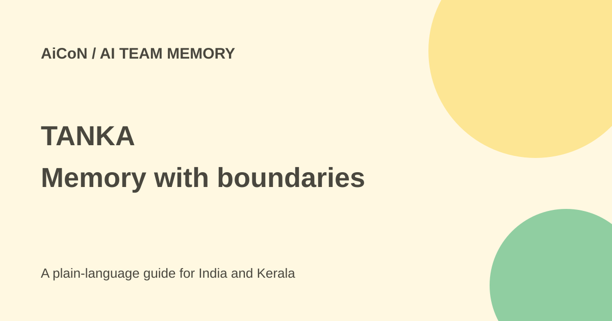

TANKA: team memory, free access and Japan pricing limits
TANKA links work records so an assistant can use earlier decisions when preparing a reply. More memory can help, but also means more private data to protect.

What is TANKA?
TANKA links emails, chats, files and meeting records into long-term work memory. It uses timing and relationships to explain project history or prepare drafts. The company's example is a reply that remembers a revised quote and an earlier promise. The user checks the content and decides whether to send.
Announced connectors include Gmail, Outlook, Teams, Notion, Google Calendar and Zoom. Features and permissions differ by service. Connecting an account does not prove every file is readable or the AI's history is correct.
Is there a Free plan?
Yes. The current Japan site offers a free start. TANKA's 30 September 2026 launch release explicitly lists Free at ¥0, correcting the old AiCoN no-free-tier claim. Check account allowances before connecting a large archive.
That dated Japan release lists monthly tax-inclusive Pro at ¥3,500, Max at ¥17,400 and Super at ¥35,000. Using Xe's 6 October reference of about ₹0.60946 per yen, these are roughly ₹2,133, ₹10,605 and ₹21,331. These are Japan launch figures, not verified India checkout quotes. Confirm current currency, billing unit and tax.
Does India get the ¥980 promotion?
Do not assume so. Founding 100 is for Japan-based teams, including eligible foreign companies' Japan entities. It offers Pro at ¥980 per seat monthly for six months, about ₹597 at the same reference rate. It then automatically changes to ¥3,500 monthly. The launch terms give a limited team allocation and 31 December 2026 application deadline. A Kerala team without Japan eligibility should not budget for it.
How to test it
- Check the plan available through the official site.
- Use a small test space with approved non-sensitive records. Ask your employer before linking work accounts.
- Connect one service and review requested read and action permissions.
- Ask for a short project history with supporting records.
- Compare dates, people and later corrections against the originals.
- Review drafts before sending. Test removal, export and deletion before expanding.
Credits and privacy
The current pricing page describes 8,000 bonus credits for a first app connection, up to six apps. Reconnecting does not repeat the bonus; these bonus credits do not expire. Memory and AI tasks consume credits. A bonus is not unlimited free use. Check task costs and balance.
TANKA says it uses US AWS servers. Security material describes logical separation on shared infrastructure, not dedicated physical servers. It says content is not used to train its own models; external AI providers can have separate terms. Its ISO and SOC claims are company-published, so request scope and documents for workplace review.
What changed since the original AiCoN post?
This guide corrects the no-free-tier claim, labels Japan prices as dated and explains promotion eligibility and automatic renewal. It separates memory benefits from data risks.
Frequently asked questions
Can individuals try it?
The Japan site presents individual use as possible. Check your account's options.
Are drafts automatically sent?
The launch example leaves sending to the user. Verify each connector's settings.
Can I upload all team records?
Not by default. Respect company and client restrictions and review hosting, retention and deletion terms.
Sources: Official site · Credits · Launch and promotion terms · Security · Yen reference. Checked 7 October 2026.